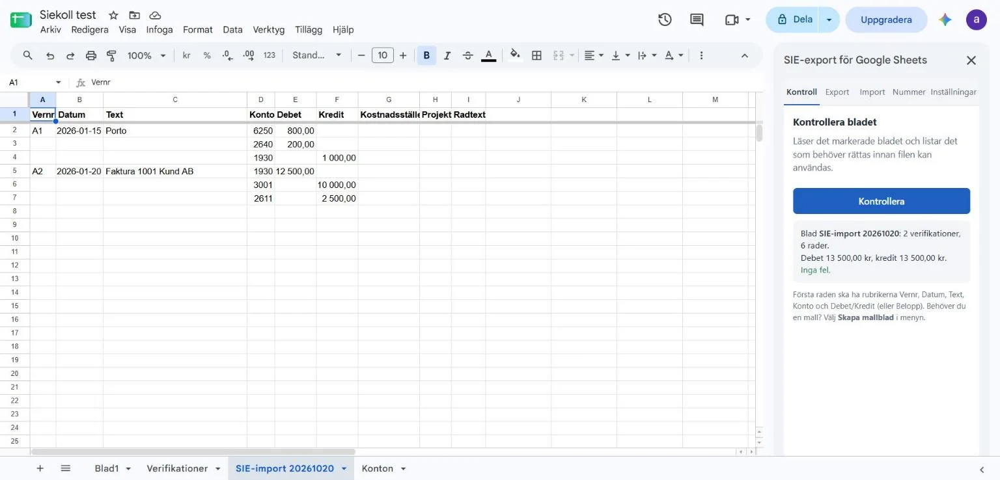
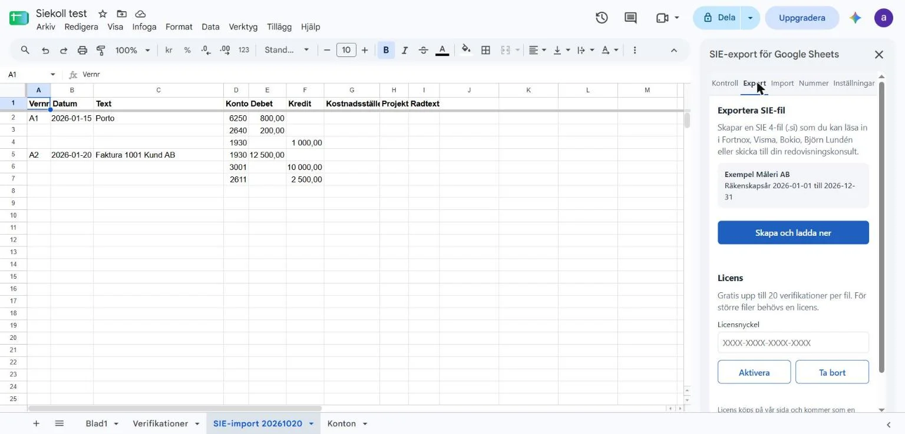

Bokför i Google Sheets. Lämna över som SIE-fil.
Siekoll är ett tillägg till Google Sheets som hittar felen i din bokföring och gör en SIE-fil som Fortnox, Visma, Bokio, Björn Lundén och din redovisningskonsult läser in direkt.
Fungerar i vilket kalkylark som helst som har rubrikerna Vernr, Datum, Text, Konto, Debet och Kredit.

Så fungerar det
Lägg verifikationerna i ett blad, en rad per konteringsrad. Mallen har rätt rubriker och två exempel.
Klicka på Kontrollera. Du får en lista, rad för rad: datum som inte går att läsa, konton som inte är fyrsiffriga, verifikationer som inte balanserar, nummer som saknas eller hoppar.
Klicka på Exportera. Filen (.si) laddas ner och kan läsas in i bokföringsprogrammet eller skickas till konsulten.
Gratis
- Kontroll av bladet, så många gånger du vill
- Mallblad med rätt rubriker och exempel
- Läs in en SIE-fil som ett blad
- Kontroll av personnummer, organisationsnummer och OCR-nummer
- Export av filer med upp till 20 verifikationer
Licens
19 USD per år
Cirka 199 kr. Moms läggs till vid köpet.
- Export utan gräns för antal verifikationer
- Gäller för dig, i upp till tre webbläsare
- Ångerrätt 14 dagar
Köpet sker hos Lemon Squeezy. Nyckeln kommer med kvittot och klistras in under Export i panelen.
Installera
Siekoll finns på Google Workspace Marketplace. Öppna ett kalkylark, välj Tillägg → Hämta tillägg och sök på Siekoll, eller använd knappen nedan.
Tillägget ber bara om att läsa och skriva i det kalkylark där det körs, visa sin panel och kontakta licensservern. Inga andra behörigheter.

Om SIE
SIE är den svenska standarden för att flytta bokföring mellan program. Siekoll skriver filer av typ 4 (verifikationer, för import), kodade som standarden kräver, med alla konton som används så att programmet kan lägga upp dem som saknas. Kostnadsställe och projekt följer med som SIE-dimensioner.
#FLAGGA 0
#FORMAT PC8
#SIETYP 4
#FNAMN "Exempel Måleri AB"
#RAR 0 20260101 20261231
#KONTO 1930 "Företagskonto"
#KONTO 6250 "Porto"
#VER "A" "1" 20260115 "Porto"
{
#TRANS 6250 {} 800.00
#TRANS 2640 {} 200.00
#TRANS 1930 {} -1000.00
}
Ur en fil som Siekoll skrev den 23 oktober 2026.
Vanliga frågor
Vilka program kan läsa filen?
Alla program som läser SIE 4, bland andra Fortnox, Visma eEkonomi, Bokio och Björn Lundén. Redovisningskonsulter läser in filen i sitt eget program.
Lämnar mina siffror kalkylarket?
Nej. Kontrollen och filen skapas i ditt eget Google-konto. Det enda som skickas vidare är licensnyckeln, till licensservern, när du aktiverar eller kontrollerar en licens.
Vad händer om bokföringsprogrammet inte tar emot filen?
Skicka filen och felmeddelandet till Aveltrum@gmail.com, så rättar vi. Har du en licens och det inte går att lösa får du pengarna tillbaka.